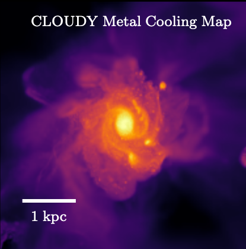
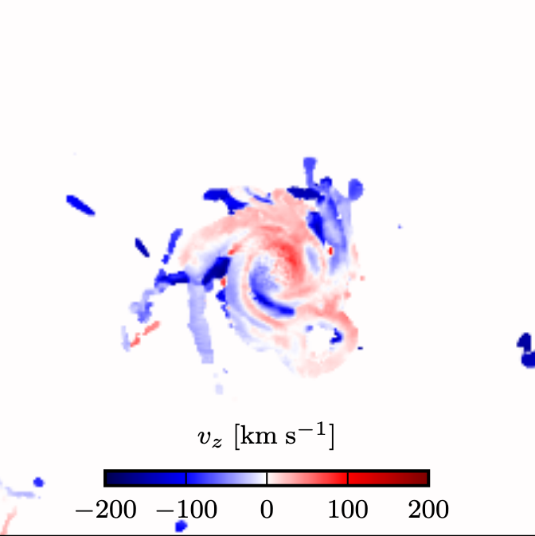
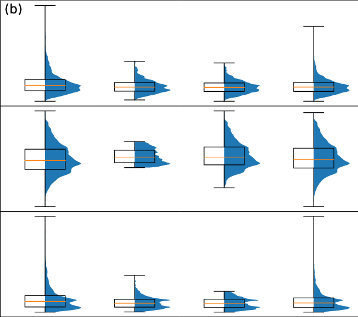

Welcome!
Hi! Welcome to my site. I'm Tom Galligan, an incoming Graduate Software Engineer at Beamery. This site is a short explanation of who I am and what I enjoy. I hope you enjoy it!
Programming
I first started programming at university, where we had a MATLAB course in first year. For the first term, I loathedcoding and spent as little time as possible on it. It was only later on when the projects became more interesting that I began to understand how powerful programming can be, and how much scope there is for creativity and imagination. I ended up hooked, and have been diving into different projects ever since.
Prior to this summer, I mainly worked in Python, with a little C++ and Fortran every now and then. Javascript and web design is a totally new world for me, but I'm really enjoying getting my teeth into it over the summer!
CV
| 2018-2019 | Master of Mathematical and Theoretical Physics Dissertation: Signatures of the Milky Way's non-axisymmetry from Gaia data University of Oxford |
|---|---|
| 2015-2018 | BA Physics University of Oxford |
| 2013-2015 | A Levels: Maths, Further Maths, Physics, and Chemistry (AS) Urmston Grammar School, Manchester |
Projects
Most of my programming experience has been in computational physics. I worked on the simulation of plasmas, both for nuclear fusion research and in astrophysical contexts. My main area of interest was the application of machine learning to plasma physics, and how ML can be used to improve our understanding of galaxy formation.
Click on any of the pictures below to find out more!
|  |  |  |